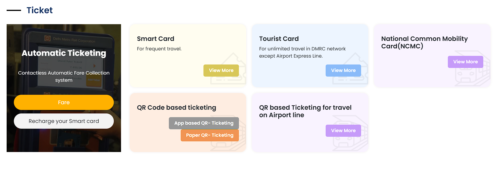

"DELHI METRO RAIL CORPORATION LTD."

Delhi Metro provides a range of ticketing options for commuters, ensuring convenience and efficiency.
Token
- For single journeys.
- Purchase at counters or vending machines.
- Valid only on the day of purchase, collected at the exit gate.
Smart Card
- Ideal for regular commuters with a 10% fare discount.
- Initial purchase: ₹150 (₹50 refundable deposit, ₹100 travel balance).
- Rechargeable and usable across all lines.
Tourist Card
- For visitors.
- One-day (₹200) and three-day (₹500) options, including a ₹50 refundable deposit.
- Unlimited travel during the selected period.
Recharge Option
- Online: Via DMRC website or app.
- Automatic: Through bank accounts or digital wallets.
- At Stations: Customer care centers, counters, and vending machines.
Corporate Cards
- For organizations and institutions.
- Customizable for managing travel expenses for large groups.
In summary, Delhi Metro's diverse ticketing options ensure a smooth and hassle-free travel experience for all passengers.